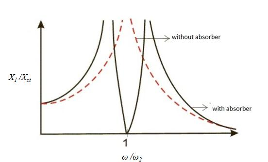

Dynamic vibration absorber
Introduction When a structure is externally excited, it will have undesirable vibrations. The amplitude of vibration will be maximal when the system gets excited close to its naturalfrequency and this can cause rapid catastrophic failure. Hence it becomes necessary to neutralizethese vibrations. One of the methods for neutralizing these vibrations is by coupling a vibrating system to it so that the amplitude can be brought down to zero. This kind of vibrating system is known as vibration absorber or dynamic vibration absorber (DVA). DVA are used to control structural vibrations where it concentrates on neutralizing the amplitude of vibration at resonance. Some practical examples of dynamic vibration absorber showed in Fig 1 and 2.

The free-body diagrams of the masses and are shown in Fig. 4. By application of Newtons second law of motion to each of the masses gives the equations of motion as: $\begin{array}{l}m_1{\overset{..}x}_1+k_1x_1+k_2\left(x_1-x_2\right)=F_0\sin(\omega t)\\\\\\\;\;\end{array}$ ... (1) $\begin{array}{l}m_2{\overset{..}x}_2+k_2\left(x_2-x_1\right)=0\\\\\\\;\;\end{array}$ ... (2) Steady state response of two degree of freedom is assumed as, $\begin{array}{l}\;\;x_1\;=X_1\sin(\omega t+\phi)\;And\;x_2=X2\sin(\omega t+\phi)\\\\\\\;\;\end{array}$ By substituting x1 and x2 in equation 1 and 2 we get, $\left(k_1+k_2-m_1\omega^2\right)X_1-k_2X_2=F_0$ ... (3) $\begin{array}{l}-k_2X_1+\left(k_2-m_2\omega^2\right)X_2=0\\\\\\\;\;\end{array}$ ... (3) $\begin{array}{l}-k_2X_1+\left(k_2-m_2\omega^2\right)X_2=0\\\\\\\;\;\end{array}$ ... (4) By solving the equation 3 and 4, amplitude of vibration of main system and absorber system given by, $X_1=\frac{\left(k_2-m_2\omega^2\right)}{\left[m_1m_2\omega^4-\left\{m_1k_2+m_2\left(k_1+k_2\right)\right\}\omega^2+k_1k_2\right]}$ ... (5) and $X_2=\frac{k_2F_0}{\left[m_1m_2\omega^4-\left\{m_1k_2+m_2\left(k_1+k_2\right)\right\}\omega^2+k_1k_2\right]}$ ... (6) From equation 5 it can be observed that the amplitude of vibration of main system X1 can be zero if numerator becomes zero. or $i.e,\;k_2-m_2\omega^2=0$ $or\;\omega^2=\frac{k_2}{m_2}=\omega_{n2}^2$ ...(7) From equation 7, it can be concluded that when the excitation frequency is equal to the natural frequency of the absorber, then main system amplitude becomes zero even though it is excited by harmonic force. Dimensionless form of equation 5 and 6 can be written as, $\frac{X_1}{X_{st}}=\frac{\left(1-{\displaystyle\frac{\omega^2}{\omega_2^2}}\right)}{{\displaystyle\frac{\omega^4}{\omega_1^2\omega_2^2}}-\left\{\left(1+\mu\right){\displaystyle\frac{\omega^2}{\omega_1^2}}+{\displaystyle\frac{\omega^2}{\omega_2^2}}\right\}+1}$... (8) $\frac{X_2}{X_{st}}=\frac1{{\displaystyle\frac{\omega^4}{\omega_1^2\omega_2^2}}-\left\{\left(1+\mu\right){\displaystyle\frac{\omega^2}{\omega_1^2}}+{\displaystyle\frac{\omega^2}{\omega_2^2}}\right\}+1}$... (9) Equations 8 and 9 give the amplitude response of main system and absorber system as a function of exciting frequency. Where, $X_{st}$ = $\frac{F_0}{k1}$= Zero frequency deflection of the main system $\omega1$= Natural frequency of the main system $\omega2$= Natural frequency of the absorber system $\omega$= Frequency of external excitation $\mu$= ratio of absorber mass to the main mass Fig 5 shows the variation of X1/Xst for different frequency ratios.
Lets try to understand these equations by doing a few simple simulations, go to next tab procedure to find out how to run the simulation to EXPLORE (expR) and to EXPERIMENT (expT). A talking tutorial or a self-running demo with narration can be seen at EXPLAIN (expN).


: